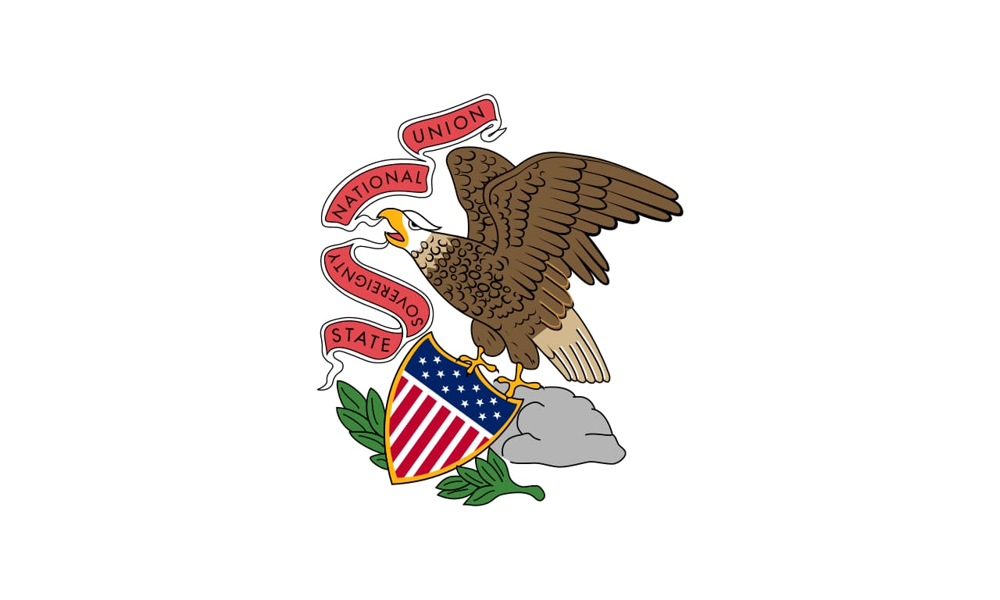

About Me
Hello, my name is Samuel Bledsoe. I am from southern Illinois. I love to spend time with my family and learn new things. I am new to the world of technology and am very excited for what I will learn!

Illinois, U.S.A.

Illinois is a diverse Midwestern state known for its blend of urban energy and rural charm. It's home to Chicago—America’s third-largest city—famous for its skyline, deep-dish pizza, blues music, and cultural landmarks. The state also includes fertile farmland, historic towns, and scenic river valleys. Illinois played a key role in U.S. history, especially during the Civil War era, and is proudly known as the "Land of Lincoln," honoring Abraham Lincoln, who spent much of his life there.